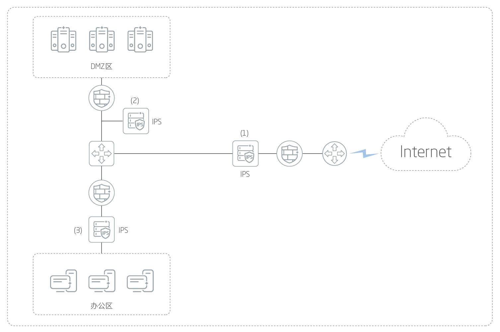

产品概述
赛博特安入侵防御系统是高性能、智能化的入侵防御系统。该系列产品基于先进架构，以赛博特安创新流过滤检测技术和拥有多项国际专利的NEL引擎为核心，集防火墙、入侵防御（IPS）、防病毒（AV）、反垃圾邮件（AS）、海量URL分类、应用识别与控制、DoS/DDoS攻击防御和VPN等多项尖端安全技术于一身，在确保网络稳定的前提下，极大地提升了处理性能和综合安全防护能力。
应用价值
赛博特安集成安全网关入侵防御系统（IPS）是赛博特安具有完全自主知识产权的第二代入侵防御产品，可有效检测并阻断从L2到L7层的入侵威胁，消除企业用户面临的外部和内部安全隐患，从而构筑全方位、多层次的防御体系，为用户业务的正常运行提供强有力的安全保障。
产品亮点
性能安全并重，实力业界领先
最高80Gbps的IPS检测能力，突破应用性能瓶颈，同时容纳大规模在线用户与高并发连接，性能与安全并重，保障用户关键业务高效稳定。
主动智能防御，风险可视可控
智能感知网络环境，自动生成安全策略，安全事件自动触发报警并产生日志，实现精准定位与溯源，实时监控网络动态，多样化图形方式展示威胁，风险一目了然。
网络拓扑动态展示和流量实时可视化
赛博特安NCSS能够直观实时展示虚拟化环境的网络拓扑结构，并能够收集分析虚拟机之间的通信数据，帮助用户掌握云内部的细微变化、流量信息和威胁信息。
立体安全防御，阻断入侵攻击
集IPS、AV、AS及应用识别等安全功能于一体，铸就全方位的攻防体系，提供多层次防护，从网络层到应用层，阻断DoS/DDoS与SQL注入等数千种攻击，基于应用及内容识别的攻击防御，精准高效，安全更可靠。
云端安全联动，深度威胁检测
与赛博特安云安全平台智能联动，基于大数据与人工智能，检测深入高效，查杀文件类型丰富，检测嵌套文件层次深，有效拦截变种病毒和未知病毒，对HTTPS加密流量进行深度检测，安全威胁无所遁形。
快速定位风险，实时应急响应
第一时间知悉重大高危漏洞，及时更新规则，零时差防护，实时追踪热点趋势，每周更新特征库，防范最新病毒与攻击，提供7*24小时的技术支持，响应服务永不离线。
应用场景
